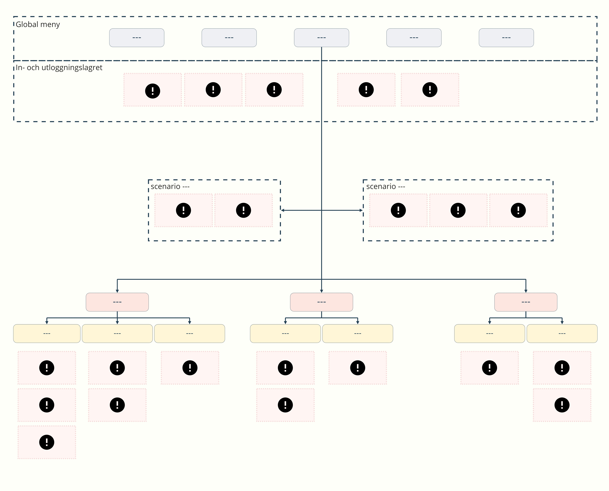
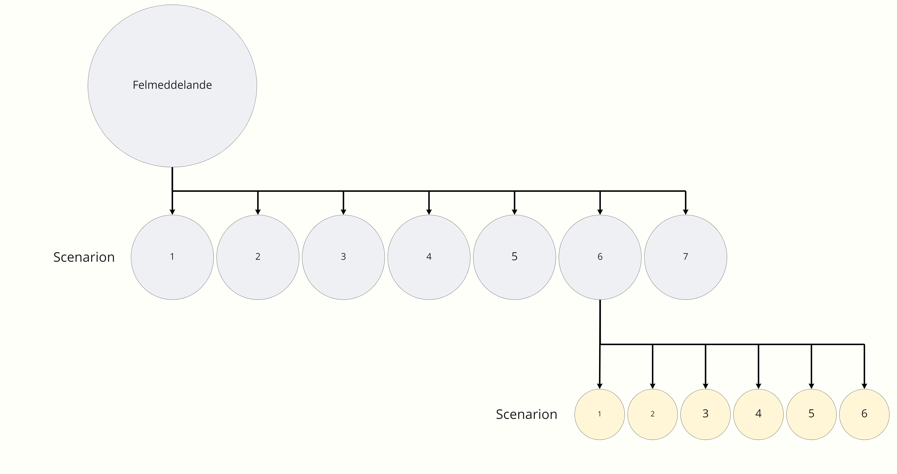
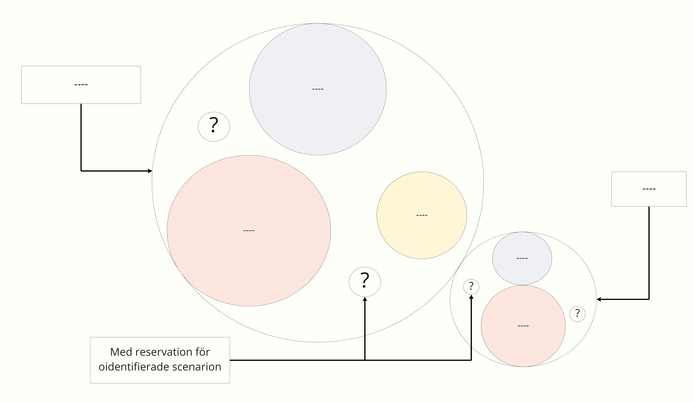

Försäkringsbolag

Empati

Definera

Idégenerera

Prototyp

Test
Uppdrag
Ett examensarbete som utförts på ett försäkringsbolag i Stockholm, där jag praktiserade som UX-designer. Bakgrund Vid ett förbättringsarbete av Mina sidor så hade man identifierat ett antal felmeddelanden som behövdes ses över och förnyas. Uppdraget var att analysera och kartlägga dessa felmeddelanden samt ta fram designlösningar.
Viktiga insikter
Projekt
Felmeddelanden kan komma från olika system och säga olika saker. Vid lösningsarbetet blev det tydligt att en mall är att föredra där copy och eventuell bild kan bytas ut beroende på scenario för att underlätta och effektivisera arbetetet.
Vid analysarbetet så införskaffades mycket information. För att spara tid och underlätta vid sammarbeten så visualiserades insikterna. Det här uppskattades av kollegor då det var enkelt att kommunicera och få samsyn.
Arbetetsprocessen
Konternuerligt sammarbete med copy expert, utvecklare samt andra intressenter sparar tid och ökar sannolikheten för en optimerad lösning.
Då det finns tendens att arbetet växer sig större ju mer informations som införskaffas är det bra att ha ett väl avgänsat scope. Det är att föredra en parkeringsplats för ytterliggare insikter som identifieras under analysen och behöver ses över.
Strategi
Omvärldbevakningen delades upp i två delar.
Generell informaion kring felmeddelanden för att titta på bl.a intressant copy och designlösningar samt
skedde bevakning av liknande bolag för att jämföra och titta på standard design hos konkurrenter.
Det utfördes en intern nulägesnalays, analysen av Mina sidor skedde genom att manipulera data samt trigga scenarion för att få fram och kartlägga felmeddelanden.
Kvantitativ och kvalitativ data samlades in som tillägg till materialet.
Datan som samlades in i det här skedet gjorde det möjligt att kategorisera och prioritera arbetet.
Kartläggning
Scenarion och under-scenarion
Kategorisering och prioritering
Den insamlade datan visade att det finns ett flertal scenarion som går till samma felmeddelande. Genom att se över dessa navigationsvägar så kunde hypotetiska användarbehov tas fram eftersom varje scenario gav en hint på användarbehov i respektive scenario. I tillägg till det så fanns tillgång till effektkartläggning där bolagets behov tydliggjordes. Behovsanalyserna togs i beaktning och användes i idégenerering. Materialet syddes ihop till designlösningar, först i form av low fidelity wireframes där bollning med både utvecklare, copyexpert och designer gjordes. Underlaget blev sedan high fidelity prototyper, dels som material till användningstester och dels som rekommendationer för stakeholders.
Rekommendation
Överlämning skedde genom presentationer för olika delar av föräskringsbolaget. Rekommendationer las fram i form av designförslag samt rekommendationer att göra djupare undersökning av vissa scenarion som låg utanför scope.
Designbeslut
I felmeddelandet nedan så har de valbara alternativen design efter prioriteringsgrad som identifierats i tester. Viktigt att undertsyrka är att knappar och bild ska vara kodade efter WCAG's riktlinjer. Microcopyn är framtagen med inspiration från konceptet ”MJÖLig”; Mänsklig, HJälpsam, Ödmjuk och Lättsam.
Nedan syns ett scenario där en användare inte kunnat logga in. På landningssidan för det här scenariot så har information lagts under drop downs av två anledeningar. Dels för att ge användaren en enkel och snabb överblick och dels för att undvika kognitiv överbelatsning, här kan användaren expandera ut respektive scenario och läsa om sin specifika situation.